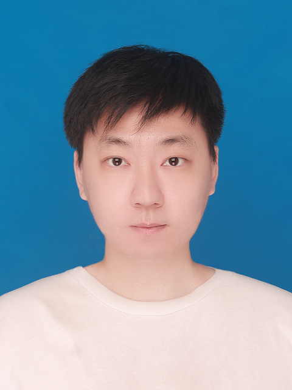
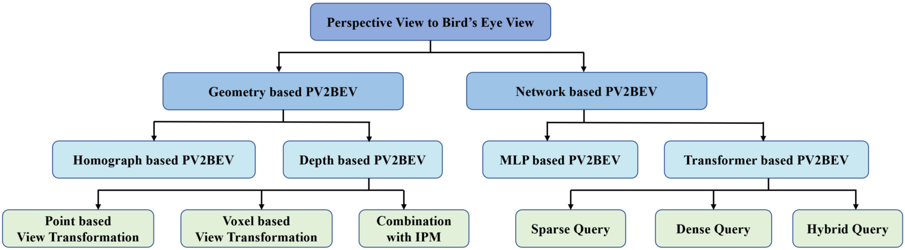
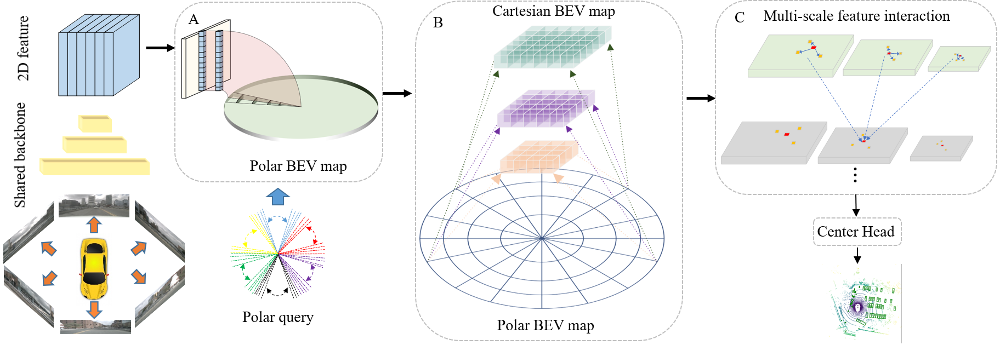
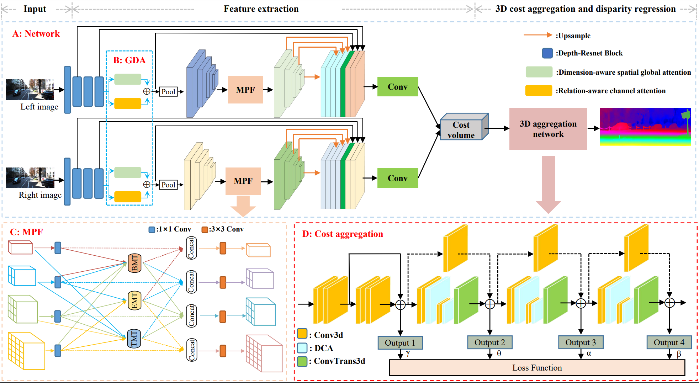

|
Huitong Yang 杨蕙同
I received the M.S. degree in optical engineering from Guangdong University of Technology, China, in 2022. I am working closely with Prof. Yuexin Ma at 4DVLab in ShanghaiTech University and Prof. Hang Zhao at MARS Lab in Shang Hai Qi Zhi Institute.
Email /
CV /
Github
|

|
|
Research
I am interested in 3D perception for autonomous vehicles(3D Detection, point cloud segmentation) and scene understanding(stereo matching).
|
|

|
Vision-Centric BEV Perception: A Survey
Yuexin Ma, Tai Wang, Xuyang Bai, Huitong Yang, Yuenan Hou, Yaming Wang, Yu Qiao, Ruigang Yang, Dinesh Manocha, Xinge Zhu
TPAMI, 2023(Submitted)
paper /
code /
bibtex
|
|

|
One Training for Multiple Deployments: Polar-based Adaptive BEV Perception for Autonomous Driving
Huitong Yang, Xuyang Bai, Xinge Zhu, and Yuexin Ma
ICRA, 2023(Accepted)
paper /
code /
bibtex
|
|

|
GAMNet: Global Attention Via Multi-scale Context
for Depth Measurement Algorithm and Application.
Huitong Yang, Qi Wang, Liang Lei
Measurement Science and Technology(MST), 2023(Submitted)
paper /
code/
bibtex
|
|
Experience
ShanghaiTech University, Mar. 2022 - Dec. 2022
Shanghai Qi Zhi Institute, Jan. 2023 - Now
|
|
{kind=link}